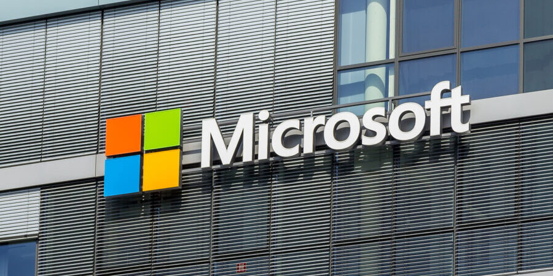

Introdução
O computador é muito utilizado atualmente. Seja para lazer ou trabalho, ele é sempre muito importante em diversas tarefas do dia-a-dia, estando presente em diversos locais como residências e estabelecimentos. Mas você conhece a história desta incrível máquina? Então, continue a leitura para saber mais sobre a história dos computadores.
Os computadores tiveram uma evolução incrível desde sua criação, tanto em tamanho quanto em capacidade de processamento, sistema e várias outras características que foram sendo aperfeiçoadas ao longo tempo. E atualmente aparelhos muito mais poderosos e baratos do que o primeiros computadores, que eram absurdamente caros, hoje cabem em nossas mãos e podem ser comprados por algo entorno de apenas 300 dólares.
O primeiro computador
O primeiro computador da história, que deu início a primeira geração, surgiu entre 1943 e 1946 e se chamava ENIAC (Eletronic Numerical Intregrator and Computer).Para que o ENIAC fosse criado foram investidos cerca de 500 mil dólares, que hoje dia seriam vários milhões de dólares.
Para seu funcionamento era necessário cerca de 200 quilowatts ou 200 mil watts de energia. Além disso o computador conseguia fazer apenas 5 000 oparações por segundo, algo insignificante atualmente. Ele também não possuía memória, pois ele ainda nem havia sido criada, algo que só mudaria em 1956 cerca de 10 anos depois quando a IBM criou a forma de armazenamento em disco conhecida como HD.
Na época do ENIAC, apenas empresas e certas instituições podiam usar um computador e no futuro, com a evolução dessa tecnologia ao passar do tempo, ela poderia ser acessada por todos.
Sistema operacional
Por volta de 1980, a IBM possuía um sistema operacional chamado 86-DOS e a Microsoft que já estava desenvolvendo suas ideias ofereceu seu sistema operacional para a IBM. Com o acordo fechado, a Microsoft comprou o 86-DOS 1.10 e assim o esse sistema acabou sendo exclusivamente da Microsoft.
A Microsoft acabou vendendo seu sistema operacional para outras empresas, algo que ajudou muito na disponibilização dos computadores para mais pessoas.
